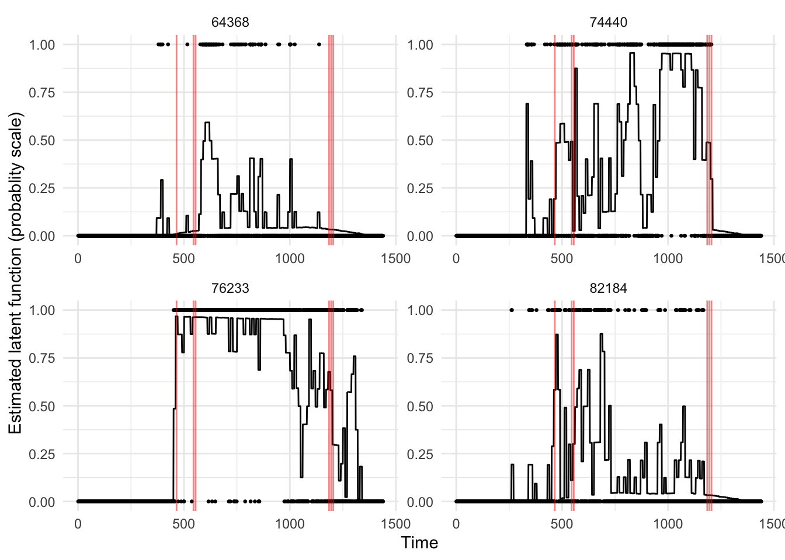
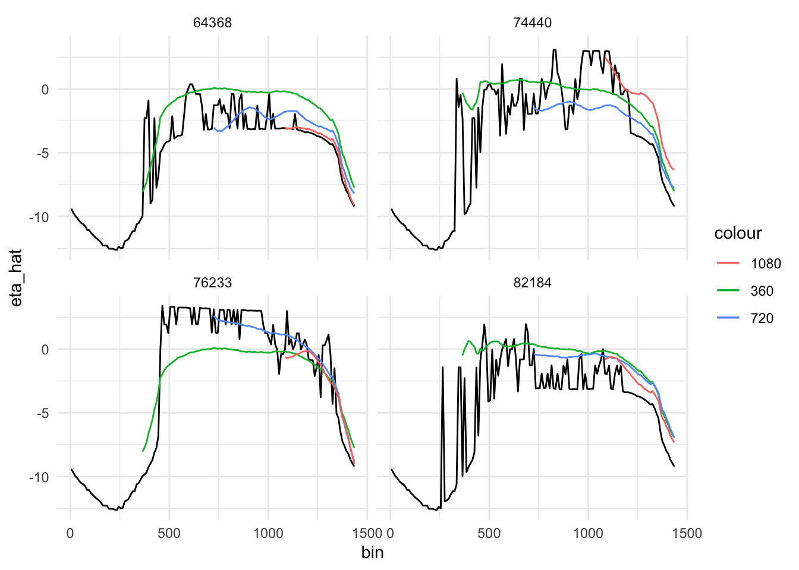

Progress Report
Ying Jin
2023-05-16
1 NHANES data application
1.1 Data overview
- 8763 subjects, 1440 measures each
- no missingness
N <- length(unique(df$SEQN)) # sample size 8763
J <- max(df$sind) # 1440 measures per subjectrand_id <- sample(unique(df$SEQN), size = 4) # "toy" sample
df %>%
filter(SEQN %in% rand_id) %>%
ggplot()+
geom_point(aes(x=sind, y=Z), size = 0.5)+
facet_wrap(~SEQN)+
labs(x="Time", y = "Activity", title = "A brief overview of the outcome")
1.2 fGFPCA Estimation
# code
source(here("Code/GLMM-FPCA.R"))
# use pred_latent function to estimate latent function
source(here("Code/OutSampMLE.R"))
# source(here("Code/OutsampBayes.R"))1.2.1 Binning
- Bin every 10 measures
# bin data
bin_w <- 10 # bin width
n_bin <- J/bin_w # number of bins
brks <- seq(0, J, by = bin_w) # cutoff points
mid <- (brks+bin_w/2)[1:n_bin] # mid points
df$bin <- cut(df$sind, breaks = brks, include.lowest = T, labels = mid)
df$bin <- as.numeric(as.character(df$bin))
# head(df)
df %>%
filter(SEQN %in% rand_id) %>%
group_by(SEQN, bin) %>%
summarise(num = sum(Z)) %>%
ggplot()+
geom_point(aes(x=bin, y=num), size = 0.5)+
facet_wrap(~SEQN)+
labs(x="Time", y = "Activity", title = "Number of active nimutes within each bin")
1.2.2 Local GLMMs
- This is where near-unidentifiability issues first appear
- Though point estimation not necessarily affected
# split by each bin
df <- df %>% rename(id = SEQN, Y=Z)
df_bin_lst <- split(df, f = df$bin)
# fit local GLMM and estimate latent function
# near-unidentifiability issues
df_est_latent <- lapply(df_bin_lst, function(x){pred_latent(x)})
df_est_latent <- bind_rows(df_est_latent)
# keep midpoint values
df_est_latent <- df_est_latent %>%
select(-sind, -Y) %>% distinct(.)df %>%
filter(id %in% rand_id) %>%
left_join(df_est_latent, by = c("id", "bin")) %>%
mutate(eta_hat = exp(eta_hat)/(1+exp(eta_hat))) %>%
ggplot()+
geom_line(aes(x=sind, y=eta_hat, group = id))+
geom_point(aes(x=sind, y = Y, group = id), size = 0.5)+
facet_wrap(~id, scales = "free")+
geom_vline(xintercept = c(465, 545, 555, 1185, 1195, 1205), col = "red",
alpha = 0.5, linewidth = 0.5)+
labs(x = "Time", y = "Estimated latent function (probablity scale)")
# overview at estimated latent function
df %>%
filter(id %in% rand_id) %>%
group_by(id, bin) %>%
summarise(num = sum(Y)) %>%
left_join(df_est_latent, by = c("id", "bin")) %>%
# mutate(eta_hat = exp(eta_hat)/(1+exp(eta_hat))) %>%
ggplot()+
geom_line(aes(x=bin, y=eta_hat, group = id, linetype = "dashed"))+
geom_point(aes(x=bin, y = num, group = id), size = 0.5)+
facet_wrap(~id, scales = "free")+
geom_vline(xintercept = c(465, 545, 555, 1185, 1195, 1205), col = "red",
linewidth = 0.5, alpha = 0.6)+
labs(x = "Bin", y = "Estimated latent function/number of active minutes")
- Take a closer look at the unidentifiable bins?
I just realized glmer actually used Laplace approximation as well. Could this also be due to numeric stability? In some bins (465, 545, 555, 1185, 1195, 1205), the approximation failed to converge.
Below is the warning messages and one model summary.
For this bin, the problem is with the fixed effect standard error. It is clearly near-zero.
https://www.learn-mlms.com/07-module-7.html
https://rstudio-pubs-static.s3.amazonaws.com/33653_57fc7b8e5d484c909b615d8633c01d51.html
try_fit_lst<-list()
for(i in seq_along(df_bin_lst)){
this_glm <- tryCatch({glmer(Y ~ 1 + (1|id), data = df_bin_lst[[i]],
family = binomial)},
warning=function(w){NA})
try_fit_lst[[i]] <- this_glm
}
# bins where glmer returned errors
# names(df_bin_lst)[is.na(try_fit_lst)]issue_fit <- glmer(Y ~ 1 + (1|id), data = df_bin_lst[['465']],
family = binomial)## Warning in checkConv(attr(opt, "derivs"), opt$par, ctrl = control$checkConv, :
## Model failed to converge with max|grad| = 1.32945 (tol = 0.002, component 1)## Warning in checkConv(attr(opt, "derivs"), opt$par, ctrl = control$checkConv, : Model is nearly unidentifiable: very large eigenvalue
## - Rescale variables?summary(issue_fit)## Generalized linear mixed model fit by maximum likelihood (Laplace
## Approximation) [glmerMod]
## Family: binomial ( logit )
## Formula: Y ~ 1 + (1 | id)
## Data: df_bin_lst[["465"]]
##
## AIC BIC logLik deviance df.resid
## 60650.0 60668.7 -30323.0 60646.0 87628
##
## Scaled residuals:
## Min 1Q Median 3Q Max
## -2.6465 -0.0945 -0.0945 0.1827 3.0637
##
## Random effects:
## Groups Name Variance Std.Dev.
## id (Intercept) 19.72 4.441
## Number of obs: 87630, groups: id, 8763
##
## Fixed effects:
## Estimate Std. Error z value Pr(>|z|)
## (Intercept) -2.972e+00 5.318e-05 -55896 <2e-16 ***
## ---
## Signif. codes: 0 '***' 0.001 '**' 0.01 '*' 0.05 '.' 0.1 ' ' 1
## optimizer (Nelder_Mead) convergence code: 0 (OK)
## Model failed to converge with max|grad| = 1.32945 (tol = 0.002, component 1)
## Model is nearly unidentifiable: very large eigenvalue
## - Rescale variables?# table(df_bin_lst[['5']]$id, df_bin_lst[['5']]$Y)colSums(table(df_bin_lst[['5']]$id, df_bin_lst[['5']]$Y)==0)
colSums(table(df_bin_lst[['465']]$id, df_bin_lst[['465']]$Y)==0)1.2.3 FPCA
mat_est_unique <- matrix(df_est_latent$eta_hat, nrow=N, ncol=n_bin, byrow = F)
# row index subject, column binned time
fpca_mod <- fpca.face(mat_est_unique, pve = 0.95, argvals = mid, var=T)
K <- ncol(fpca_mod$efunctions) # 18 eigenfunctions# population mean
plot(mid, fpca_mod$mu, type = "l", xlab = "bin", ylab = "mean")
# eigenfunctions
par(mfrow=c(2,2))
plot(mid, fpca_mod$efunctions[, 1], type="l", xlab="bin", ylab="PC1")
plot(mid, fpca_mod$efunctions[, 2], type="l", xlab="bin", ylab="PC2")
plot(mid, fpca_mod$efunctions[, 3], type="l", xlab="bin", ylab="PC3")
plot(mid, fpca_mod$efunctions[, 4], type="l", xlab="bin", ylab="PC4")
# covariance
heatmap(fpca_mod$VarMats[[which(unique(df_est_latent$id)==rand_id[1])]],
Rowv = NA, Colv = NA, main = "Covariance matrix")
1.3 Dynamic prediction
1.3.1 Maximum likelihood
- Boundary hitting issues with numeric maximization
- Warning message: Steady solution not reached
- Large variation in both predicted values and scores. The numeric solution from maximum likelihood is obviously not stable. It is very likely to fail to converge.
- Perhaps it can be fixed with numeric options? But I’d rather not go that route because it depend on chance a lot.
# Out-of-sample prediction
# maximum observations time: 360, 720, 1080
df_pred <- df_est_latent %>% filter(id %in% rand_id)
df_pred[, 'pred_t360'] <- df_pred[, 'pred_t720'] <- df_pred[, 'pred_t1080'] <- NA
score_out_mat <- array(NA, dim = c(length(rand_id), K, 3))
# dim indexes subject, eigenfunction and max obs time respectively# prediction for a single subject
for(i in rand_id){
df_i <- df %>% filter(id==i) %>% mutate(bin=as.numeric(bin))
# prediction
pred_t360 <- out_samp_dyn_pred(df_new = df_i %>% filter(sind<=360),
fpca_fit = fpca_mod, K = K)
pred_t720 <- out_samp_dyn_pred(df_new = df_i %>% filter(sind<=720),
fpca_fit = fpca_mod, K = K)
pred_t1080 <- out_samp_dyn_pred(df_new = df_i %>% filter(sind<=1080),
fpca_fit = fpca_mod, K = K)
# prediction in container
df_pred[df_pred$id==i, 'pred_t360'] <- pred_t360$eta_pred
df_pred[df_pred$id==i, 'pred_t720'] <- pred_t720$eta_pred
df_pred[df_pred$id==i, 'pred_t1080'] <- pred_t1080$eta_pred
# score in container
# score_out_mat[i, ,1] <- pred_t360$score_out
# score_out_mat[i, ,2] <- pred_t720$score_out
# score_out_mat[i, ,3] <- pred_t1440$score_out
}df_pred$pred_t360[df_pred$bin<=360] <- NA
df_pred$pred_t720[df_pred$bin<=720] <- NA
df_pred$pred_t1080[df_pred$bin<=1080] <- NA
# df_pred %>% filter(id == rand_id[1])df_pred %>%
ggplot()+
geom_line(aes(x=bin, y=eta_hat, group = id))+
geom_line(aes(x=bin, y = pred_t360, col = "360", group = id))+
geom_line(aes(x=bin, y = pred_t720, col = "720", group = id))+
geom_line(aes(x=bin, y = pred_t1080, col = "1080", group = id))+
facet_wrap(~id)
1.3.2 Bayes method like Laplace approximation
df_pred2 <- df_est_latent %>% filter(id %in% rand_id)
df_pred2[, 'pred_t360'] <- df_pred2[, 'pred_t720'] <- df_pred2[, 'pred_t1080'] <- NA
score_out_mat2 <- array(NA, dim = c(length(rand_id), K, 3))
# unique id
# prediction for a single subject
source(here("Code/OutsampBayes.R"))
for(i in rand_id){
df_i <- df %>% filter(id==i)
# prediction
## up to 360
pred_t1 <- out_pred_laplace(fpca_mod, df_i %>% filter(sind<=360))
eta_pred_t1 <- fpca_mod$mu+fpca_mod$efunctions%*%pred_t1$score_out
df_pred2[df_pred2$id == i, 'pred_t360'] <- eta_pred_t1
## up to 720
pred_t2 <- out_pred_laplace(fpca_mod, df_i %>% filter(sind<=720))
eta_pred_t2 <- fpca_mod$mu+fpca_mod$efunctions%*%pred_t2$score_out
df_pred2[df_pred2$id == i, 'pred_t720'] <- eta_pred_t2
## up to 1080
pred_t3 <- out_pred_laplace(fpca_mod, df_i %>% filter(sind<=1080))
eta_pred_t3 <- fpca_mod$mu+fpca_mod$efunctions%*%pred_t3$score_out
df_pred2[df_pred2$id == i, 'pred_t1080'] <- eta_pred_t3
}df_pred2$pred_t360[df_pred2$bin<=360] <- NA
df_pred2$pred_t720[df_pred2$bin<=720] <- NA
df_pred2$pred_t1080[df_pred2$bin<=1080] <- NA
# df_pred %>% filter(id == rand_id[1])df_pred2 %>%
ggplot()+
geom_line(aes(x=bin, y=eta_hat, group = id))+
geom_line(aes(x=bin, y = pred_t360, col = "360", group = id))+
geom_line(aes(x=bin, y = pred_t720, col = "720", group = id))+
geom_line(aes(x=bin, y = pred_t1080, col = "1080", group = id))+
facet_wrap(~id)